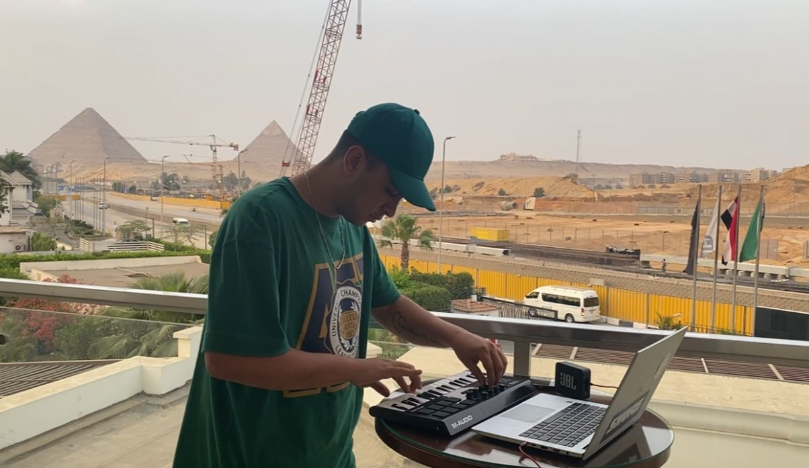
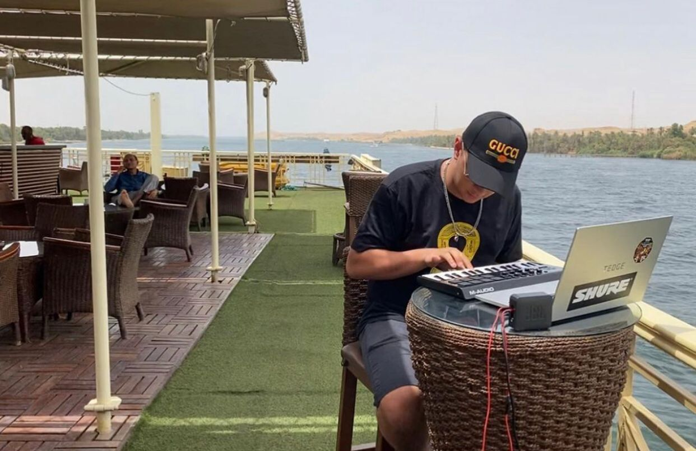

Soy un productor joven de 21 años, nacido en Argentina, Buenos Aires. Hablo español, inglés y portugués. Poseo 5 años de experiencia en la produccion musical de generos urbanos, podes ver en el catalogo de beats que estilos he trabajado. Pero basicamente y en resumen, conozco los pasos para hacer varios tipos de beats... por lo que estoy seguro que si buscas un beat con un estilo especifico, no habra inconveniente en que lo trabajemos. Puedo hacer un "Type Beat" del artista que mas te inspira a crear tu musica.
Tambien cuento con un equipo de trabajo que me ayuda a desarrollar a los artistas en otras areas: Con la mezcla, el master, el rodaje de videoclips, sesión de fotos, la publicidad, los eventos, las portadas y diseño grafico. Nuestro negocio esta basado en las creencias que tenemos acerca de aumentar las posibilidades de salida laboral en el mundo artistico, el crecimiento profesional de cualquier persona que ame lo suficiente su arte, el enriquecimiento espiritual de las comunidades gracias a los aportes del arte en la cultura y que la vida no esta unicamente para sufrir y padecer sino para alcanzar tus objetivos, lograr plenitud personal y a partir de ahi, difundir esa energia de bienestar y paz al resto de personas.
¡Para conocer más al equipo contactanos!